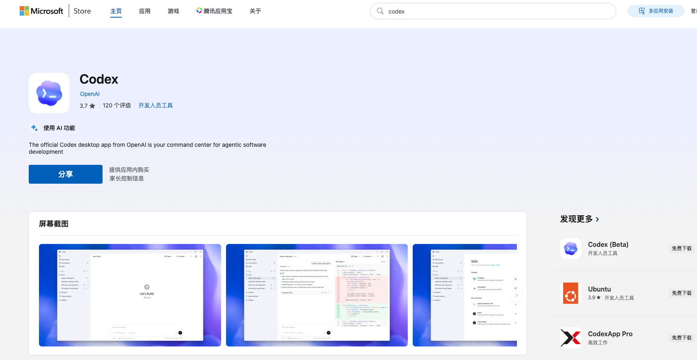
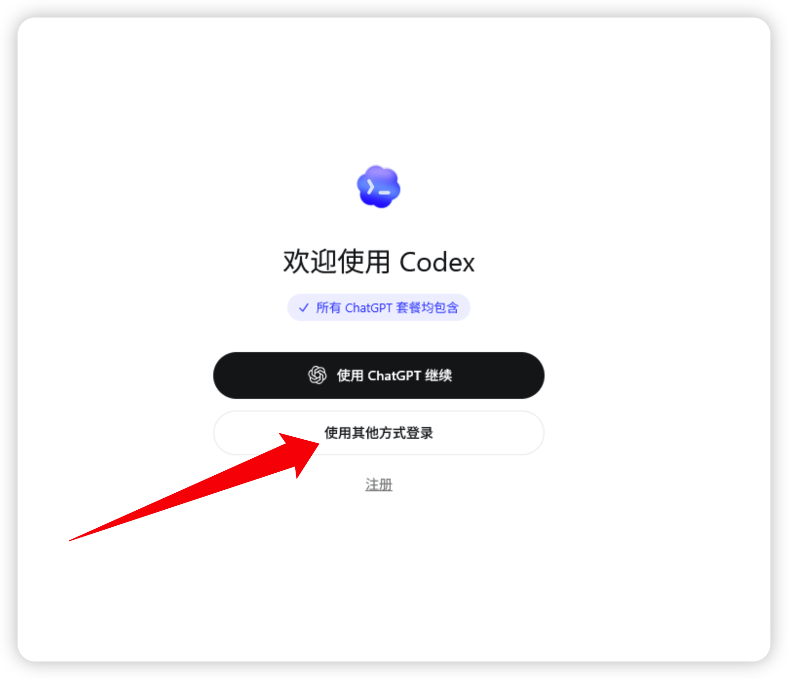
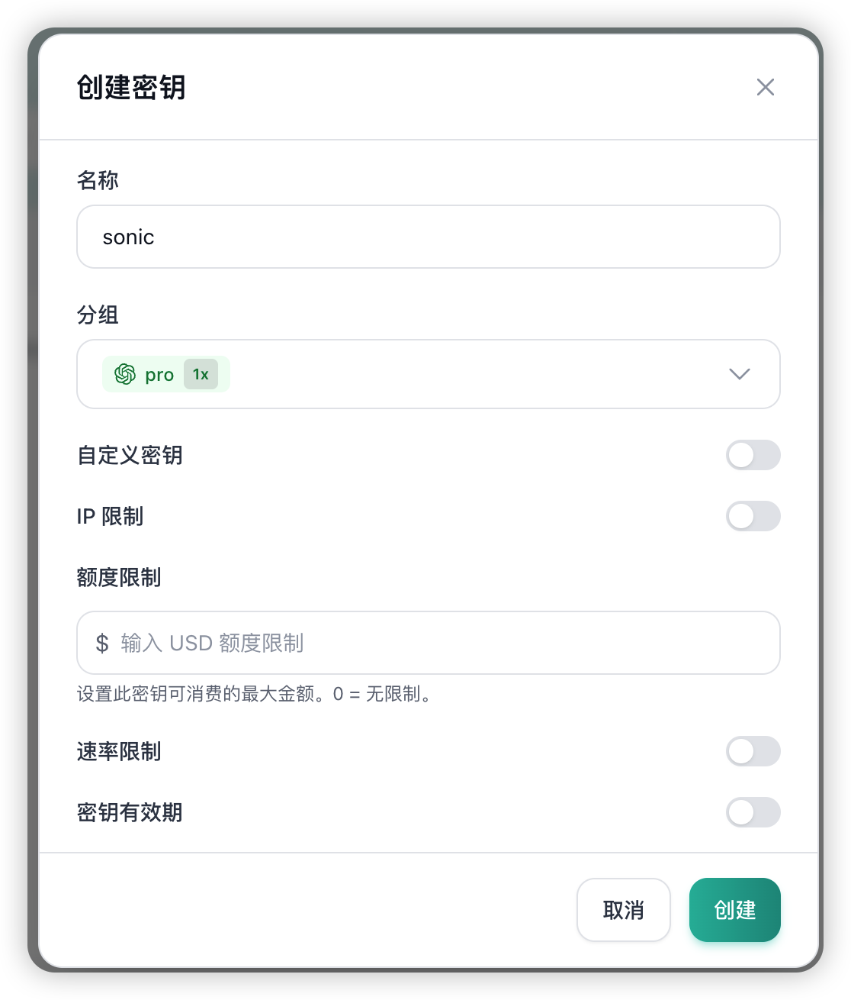
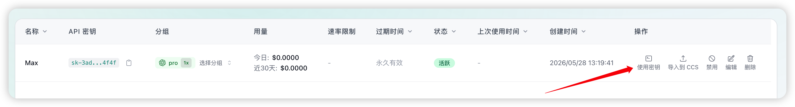

Codex App 自助安装和配置
这份教程适合第一次使用 Codex Desktop App 的同事。按顺序完成账号、安装、密钥、配置和验证，就可以在本机使用 Coding Hub 提供的模型能力。
Coding Hub 入口：http://69.63.200.80:8080/login

导读
你可以让它写代码、改代码、查 bug、补测试、解释项目代码和整理技术文档。使用时只需要描述目标，例如“帮我看这个报错”“给这个项目加登录功能”“把需求整理成接口文档”。
本教程只保留站点内必要内容，不包含外部文档附件或旧资料图片。
适用范围
| 你要做什么 | 说明 |
|---|---|
| 申请 Coding Hub 账号 | 使用邮箱在 http://69.63.200.80:8080/login 自助注册。 |
| 安装 Codex App | macOS 使用 OpenAI 官方 DMG 安装包，Windows 使用 Microsoft Store。 |
| 配置模型接口 | 在 Coding Hub 创建自己的 API 密钥，再把页面给出的配置写入 Codex。 |
| 开始使用模型 | 配置完成后重启 Codex App，发送一句测试问题确认可用。 |
1. 打开 Coding Hub
在浏览器打开下面的地址：
http://69.63.200.80:8080/login如果还没有账号，点击登录页下方的注册入口继续。
2. 注册账号
注册时填写你的邮箱，并设置一个至少 6 位的密码。建议使用企微邮箱，后续管理和排查问题会更清楚。
使用你后续登录 Coding Hub 的邮箱。
密码至少 6 位，避免和其他服务共用弱密码。
注册成功后回到登录页。
3. 已有账号就直接登录
已有账号时，不需要重复注册。回到登录页输入邮箱和密码进入 Coding Hub。如果忘记密码，先联系管理员处理，避免创建多个账号导致密钥和额度分散。
4. 安装 Codex App
Codex App 官方安装入口如下，按自己的系统选择即可。
| 系统 | 下载地址 |
|---|---|
| macOS，Apple Silicon，M1 / M2 / M3 / M4 | Download for macOS (Apple Silicon) |
| macOS，Intel Mac | Download for macOS (Intel) |
| Windows | Download for Windows |
macOS 用户
根据电脑芯片选择安装包。Apple Silicon 机型使用 M 系列安装包；Intel 机型使用 x64 安装包。安装完成后第一次打开，如果系统提示安全确认，按公司设备策略处理。
| 电脑类型 | 安装包 |
|---|---|
| Apple Silicon，M1 / M2 / M3 / M4 | Codex.dmg |
| Intel Mac | Codex-latest-x64.dmg |
Windows 用户
- 打开 Microsoft Store。
- 搜索
Codex。 - 确认开发者为 OpenAI。
- 点击 获取 / 安装。
- 安装完成后从开始菜单启动，也可以固定到桌面或任务栏。

安装完成后启动和初始化 Codex App
打开 Codex App 软件（Windows 可在开始菜单中找到并打开，建议从开始菜单拖动为桌面快捷方式）。
然后点击 使用其他方式登录，输入任意字符即可进入初始化流程。初始化完成后先关闭 Codex App，等后面写完配置再重新打开。

5. 在 Coding Hub 创建自己的 API 密钥
登录 Coding Hub 后进入密钥页面。如果你的系统提供快捷入口，可以从导航里进入；也可以尝试打开：
http://69.63.200.80:8080/keys点击 创建密钥。创建时重点检查 分组：

- 名称可以写成
我的 Codex 密钥或其他方便识别的名称。 - 分组选择 codex订阅。
- 其他开关没有特殊要求时保持默认。
- 点击 创建，然后回到密钥列表。
6. 点击“使用密钥”，查看配置内容
在密钥列表里找到刚创建的密钥，点击 使用密钥。弹窗通常会给出三类信息：

config.toml要写入的内容。auth.json要写入的内容。- macOS / Linux 和 Windows 对应的配置路径。
页面里的真实密钥只显示给你自己。下面示例里的 sk-这里替换成你自己的密钥 只是占位，实际操作时要复制 Coding Hub 页面显示的真实内容。
7. macOS 配置方法
7.1 创建配置目录
打开终端执行：
mkdir -p ~/.codex7.2 写入 config.toml
打开或新建这个文件：
~/.codex/config.toml把 Coding Hub 的“使用密钥”弹窗里 config.toml 内容复制进去，并放在文件最开头。示例：
model_provider = "OpenAI"
model = "gpt-5.5"
review_model = "gpt-5.5"
model_reasoning_effort = "xhigh"
disable_response_storage = true
network_access = "enabled"
windows_wsl_setup_acknowledged = true
model_context_window = 1000000
model_auto_compact_token_limit = 900000
[model_providers.OpenAI]
name = "OpenAI"
base_url = "http://69.63.200.80:8080"
wire_api = "responses"
requires_openai_auth = true7.3 写入 auth.json
打开或新建这个文件：
~/.codex/auth.json把 Coding Hub 页面里 auth.json 的内容复制进去。示例：
{
"OPENAI_API_KEY": "sk-这里替换成你自己的密钥"
}8. Windows 配置方法
8.1 打开配置目录
按 Win + R，输入：
%userprofile%\.codex如果目录不存在，就在用户目录下手动新建一个 .codex 文件夹。
8.2 写入 config.toml
在 .codex 文件夹里新建或打开：
config.toml把 Coding Hub 的“使用密钥”弹窗里 config.toml 内容复制进去，并放在文件最开头。示例：
model_provider = "OpenAI"
model = "gpt-5.5"
review_model = "gpt-5.5"
model_reasoning_effort = "xhigh"
disable_response_storage = true
network_access = "enabled"
windows_wsl_setup_acknowledged = true
model_context_window = 1000000
model_auto_compact_token_limit = 900000
[model_providers.OpenAI]
name = "OpenAI"
base_url = "http://69.63.200.80:8080"
wire_api = "responses"
requires_openai_auth = true8.3 写入 auth.json
在 .codex 文件夹里新建或打开：
auth.json把 Coding Hub 页面里 auth.json 的内容复制进去。示例：
{
"OPENAI_API_KEY": "sk-这里替换成你自己的密钥"
}9. 重启 Codex App 并验证
配置完成后完全退出 Codex App，再重新打开。Windows 直接点关闭有时不会结束后台进程，可以在任务管理器里结束 Codex，或者直接重启电脑。
重新打开后发送一句测试问题：
请用一句话介绍 Coding Hub。如果能正常回复，说明配置已经生效。
10. 如何把 Codex 设置为中文界面
Codex 默认界面可能是英文。可以进入设置手动切换中文：
- 打开 Codex App。
- 点击左上角 Codex 图标或菜单；Windows 可能需要从 File 进入。
- 进入 Settings。
- 选择 General。
- 找到 Language for the app UI，切换为中文。
常见问题
1. Codex 打开后还是不能用
- 检查
auth.json里的密钥是否完整复制。 - 检查
config.toml是否放在文件最开头。 - 检查配置完成后是否完全重启 Codex App。
2. Windows 找不到 .codex 文件夹
这是正常情况。按 Win + R 输入 %userprofile%，进入用户目录后手动新建 .codex 文件夹。
3. macOS 找不到 .codex 文件夹
打开终端执行：
mkdir -p ~/.codex
open ~/.codex4. 不知道应该复制哪段配置
回到 Coding Hub 的密钥列表，点击 使用密钥。页面会按系统给出配置内容：macOS / Linux 看对应标签，Windows 看 Windows 标签。
5. 密钥要不要分享给同事？
不要。每个人都应该创建自己的 API 密钥，这样额度、异常请求和问题排查都能定位到个人。